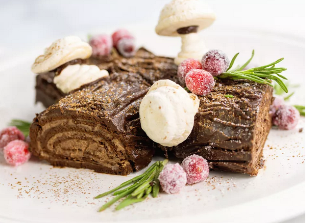

Chocolate Yule Log

A Yule log cake, a.k.a. a bûche de Noël, is a traditional holiday dessert that is meant to resemble an actual log. A sponge cake is baked in a Swiss roll pan, filled, rolled into a cylinder, then frosted again.
The yule log tradition goes back centuries: Yule or Yuletide is a winter festival that was historically celebrated by people in Northern Europe. During the festival, a special log burnt on a hearth. Nobody quite knows where this custom comes from, but it's likely the inspiration behind the festive cake.
Ingredients
- 1 ⅔ cups powdered sugar
- ½ cup unsalted butter, at room temperature
- 2 tablespoons coffee-flavored liqueur
- 1 ½ tablespoons unsweetened cocoa powder
- 1 pinch salt
- ⅓ cup mascarpone cheese
Steps
- Make the buttercream filling: Whip powdered sugar, butter, coffee-flavored liqueur, cocoa powder, salt together in the bowl of a stand mixer fitted with the whisk attachment on high speed.
- Transfer filling mixture to a separate bowl and add mascarpone cheese. Mix until combined; set aside. Clean and dry the stand mixer bowl.
- Preheat the oven to 400 degrees F (200 degrees C).
- Prepare a 13x18-inch rimmed sheet pan for the sponge cake: Brush a little melted butter over the sheet pan, then line the pan with parchment paper, and brush remaining melted butter on top.
- Whisk cocoa powder, flour, and salt together in a bowl, making sure to break up any clumps.
For More Steps